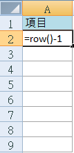

Excel 教學：掌握自動填充功能，快速提升工作效率的技巧與實用指南

在 Excel 中，自動填充 是一個不可或缺的基本功能。無論你是 Excel 初學者還是有經驗的使用者，這項技能都能大大提升你的工作效率。自動填充可以快速複製數字、日期、公式等內容，適用於處理大量數據，避免手動輸入的繁瑣操作與潛在的錯誤。
為什麼要使用自動填充？
Excel 的 自動填充功能 不僅僅適用於重複數據輸入，它還能夠識別數據的模式並自動生成連續數字或日期，甚至可以快速應用公式到多個儲存格中。這在需要大量數據處理時極為便利，幫助節省時間並減少出錯機率。
接下來，我們將通過幾個實際例子來展示如何使用自動填充功能，讓您更靈活、高效地完成工作。
自動填充的操作步驟
快速填充的兩種方法
當我們選擇一個儲存格時，將滑鼠移到選框的右下角，會出現一個小「+」符號，這代表自動填充的起始點。此時可以通過以下兩種方法來進行快速填充：
- 方法一：按住滑鼠左鍵，將「+」符號往要填充的位置拉選，適用於水平或垂直方向的填充。
- 方法二：在「+」符號出現後，雙擊滑鼠左鍵，系統會自動填充至表格中有內容的範圍。

例子 1：數字的快速填充
假設我們在 A2 儲存格 中輸入數字「1」，然後使用快速填充功能。當我們往下拉選時，Excel 會將整欄的儲存格填滿「1」。這樣可以輕鬆填充大量重複數據。

例子 2：連續號碼的快速填充
如果在 A2 和 A3 儲存格 中分別輸入數字「1」和「2」，然後進行快速填充，Excel 將識別出數據模式並填充連續的號碼。例如，從 A2 到 A9 會被自動填充為「1, 2, 3…8」的連續數字。

例子 3：公式的快速填充
在儲存格中輸入公式後，您可以利用自動填充功能將公式應用於多個儲存格。例如，將公式 =ROW()-1 輸入到 A2 儲存格 後，通過自動填充來快速將這個公式應用於 A3、A4 等多個儲存格，從而大幅提升公式運算的效率。


Excel 還允許我們檢視公式如何在每個儲存格中變化，這有助於確認填充的準確性，特別是在處理大量數據時，這能幫助減少錯誤。
小結
Excel 的 自動填充功能 是一項簡單但非常強大的工具，不僅能幫助您快速填充數據、生成連續序列，還能應用複雜的公式至多個儲存格中，大大提升工作效率。無論是在報表製作、數據分析，還是日常辦公中，熟練掌握自動填充技巧都能讓您的 Excel 操作事半功倍。
為什麼需要學習 Excel？AI 工具無法完全取代 Excel 的理由
學習 Excel 是每位現代職場人士必備的技能之一。Excel 不僅可以提升數據處理、分析能力，還能讓我們在工作中大幅提高效率。透過掌握 Excel 公式、圖表、VBA 巨集等技巧，許多重複性工作都可以被自動化處理，這能大大減少人為錯誤，並加快工作進度。
Excel 尤其在以下領域中發揮著關鍵作用：
- 財務與會計：Excel 的數據處理功能讓它成為財務人員的得力助手，無論是生成財務報表、進行預算編制，還是管理應收應付款。
- 數據分析與商業決策：Excel 可用來進行高效的數據分析，通過樞紐分析和圖表快速提取數據背後的洞見，幫助管理層作出明智的商業決策。
- 專案管理與行政工作：Excel 的自訂格式和範本功能可以用來管理專案進度，進行工作安排，讓行政工作者更輕鬆地跟進日常任務。
AI 工具的崛起與局限性
隨著 AI 工具（如 ChatGPT）的崛起，您可能會想：還需要學習 Excel 嗎？事實上，AI 工具確實能夠幫助生成並解釋 Excel 中的公式，這對解決一些簡單的數據處理問題非常有幫助。例如：
- 免費版的 ChatGPT 3.5 可以生成基本公式，如
SUM、VLOOKUP、IF，並解釋它們的用途。 - 付費版的 ChatGPT 4.0 能進一步協助處理更複雜的數據分析任務，如多步驟公式、數據模型和自動化流程。
然而，對於不熟悉 Excel 的人來說，單靠 AI 工具往往很難有效驗證結果，也難以靈活應對各種數據處理場景。因此，學習 Excel 的基礎知識仍然是必要的，這能幫助您更好地理解 AI 工具的輸出，並高效地與 AI 協同工作。
書本自學：從入門到進階的學習資源
如果你偏愛通過閱讀學習，以下這幾本書都是提升工作效率的好選擇，適合從入門到進階的 Excel 使用者。
1. 《Excel 自學聖經 (第二版)》
這本書被廣泛推薦為入門級的 Excel 學習資源，涵蓋從基本操作到高階應用。書中配有大量範例與圖表，能幫助讀者更好地掌握 Excel 中的公式、函數、資料整理等技巧。特別適合想要全面掌握 Excel 基礎的讀者。
2. 《Excel 最強商業實戰書：濃縮於一冊！》
點我前往金石堂 《Excel 最強商業實戰書：濃縮於一冊！》
這本書專注於商業應用場景，適合希望將 Excel 應用於財務、商業決策、數據分析等領域的使用者。書中的實例非常接地氣，能幫助您快速應用到實際工作中，是提升職場競爭力的利器。
線上課程：彈性學習，提升效率
線上課程提供了靈活的學習方式，不僅可以讓您在任何時間、任何地點進行學習，還能隨時更新學習內容，確保您掌握的技能與最新趨勢接軌。這對於工作繁忙的專業人士來說尤為方便，此外線上課程的價格通常比實體課程更具競爭力。
Hahow 線上課程平台
Hahow 是一個受歡迎的學習平台，涵蓋多種專業課程，適合不同層級的學習者。平台上的課程內容實用，並且由專業講師授課，讓學員可以在短時間內掌握實用技能。
- Excel 新手入門必修課：這門課程專為初學者設計，能幫助您快速上手 Excel 的基本操作與數據處理。
- 職場必備的 Excel 進階技法：針對有一定基礎的使用者，進一步學習進階函數、樞紐分析、圖表設計等技法。
Udemy 線上課程平台
Udemy 提供了豐富的課程選擇，無論是技術技能（如 Excel、Python），還是軟技能（如時間管理、領導力），您都能在 Udemy 上找到適合的課程。該平台經常提供折扣，尤其在促銷期間，您可以以實惠的價格學到高品質的內容。
- Udemy 線上課程－Excel：這門課程從基礎開始，一直到進階的樞紐分析和數據可視化，適合希望快速提升 Excel 技能的人士。
延伸閱讀
如果您想要更深入了解 Excel 的使用技巧，請點擊以下連結閱讀更多相關文章：點我前往更多文章
如果您想要更深入其他VBA 的使用技巧，請點擊以下連結閱讀更多相關文章：點我前往更多文章